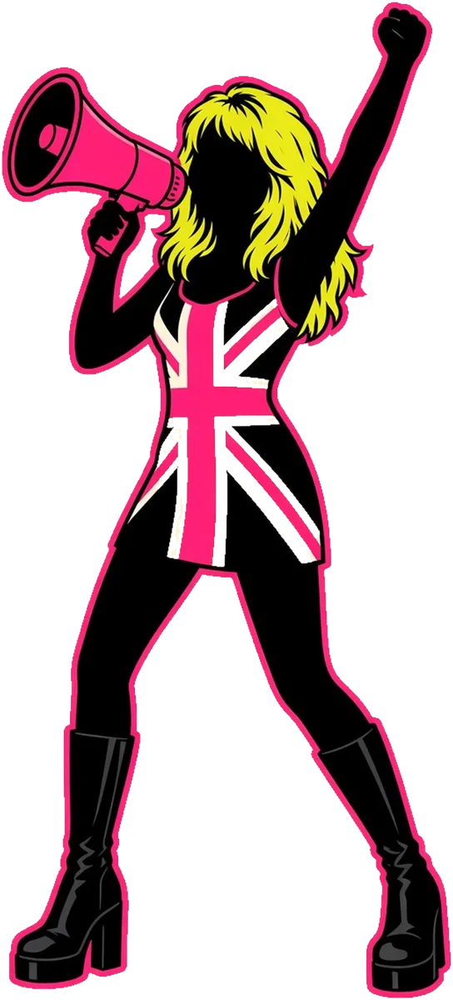

Real words. Real results.
What people sayTurn up the volume
The voices behind the results, one at a time.
Testimonials

“WaldeComms are absolute PR guns of the highest calibre. Creative, persistent and lateral thinkers, they were the driving force behind the success of our Million Moves and Fit for Office campaigns.”
“WaldeComms are weapons. Gritty hustlers who know the media landscape inside out and pitch like machines. They were mission critical in the success of 36 Months driving Australia’s landmark world-first legislation change.”
“Thank you again for all the commitment, determination and energy you have poured into 36 Months. You are making a difference, one that will change so many lives for the better.”
“I wanted to say a big thank you for Saturday, was such a pleasure! Only YOU could find Guinness World Record-holding sheep, miniature ponies and a llama with just 24 hours’ notice! We really appreciate you bringing all the animals down from the Hunter Valley. It made our year – looking forward to the next one!”
“Thank you so much for your help in coordinating today’s segment! Sarah and Jayne loved talking to Kathryn. It was such a great segment and an important chat.”
“Oh my goodness, what a weekend! I will treasure these memories for life! There are so many places this news can go. Thank you so much for going the extra mile to make it so special, and the fun times throughout!”
“Thank you for putting my name to Channel 9. I’m now flooded with enquiries wanting to join my classes. This has made my 21-year effort serving the community worthwhile.”
1 / 7
Tap the quote or use the arrow keys. A new voice every five seconds.
Ready tomake noise?
Tell us the story. We’ll make it the one people can’t ignore.
Start the conversation →